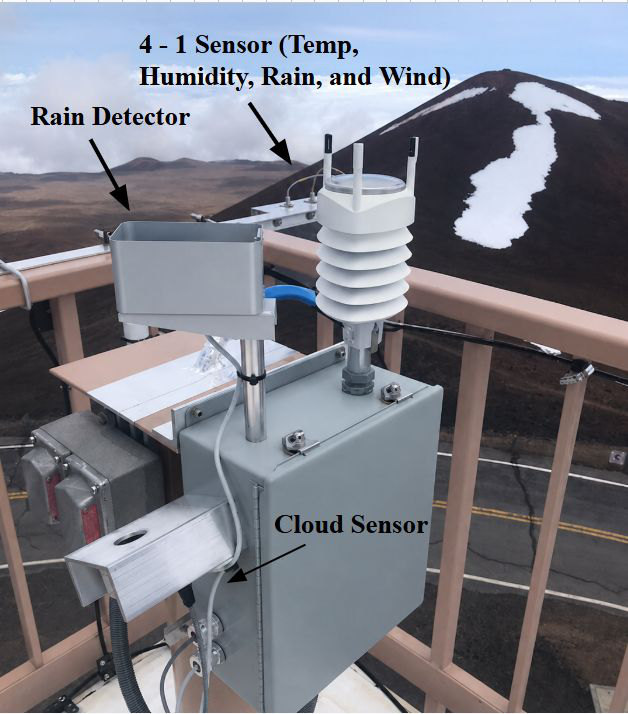
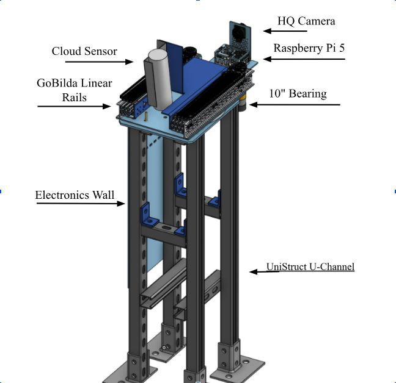
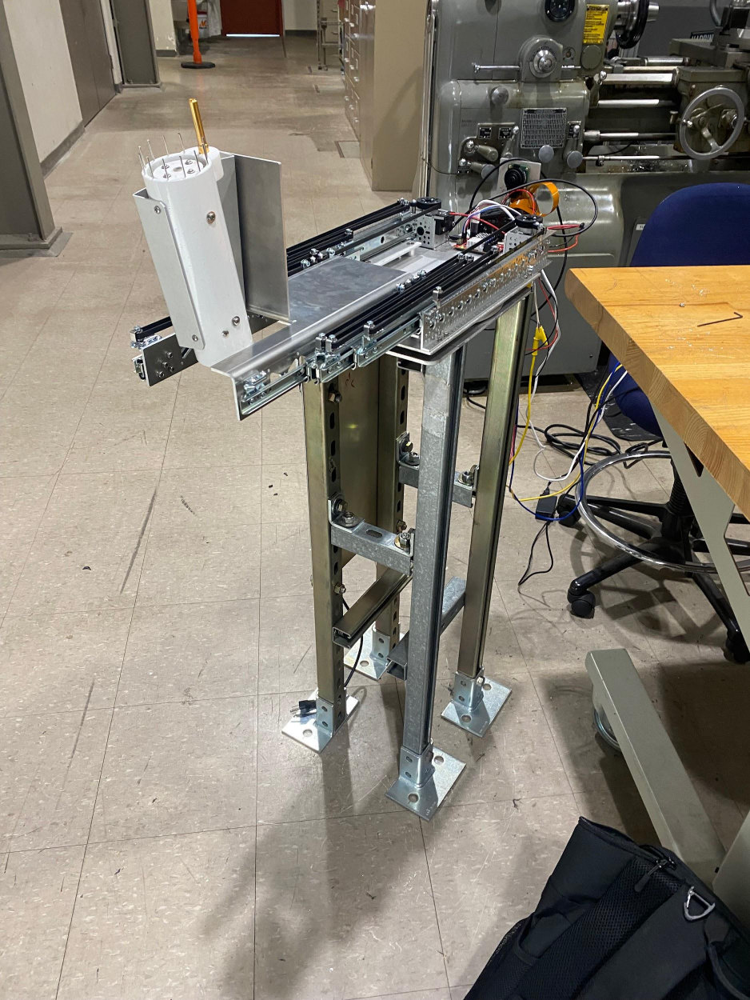
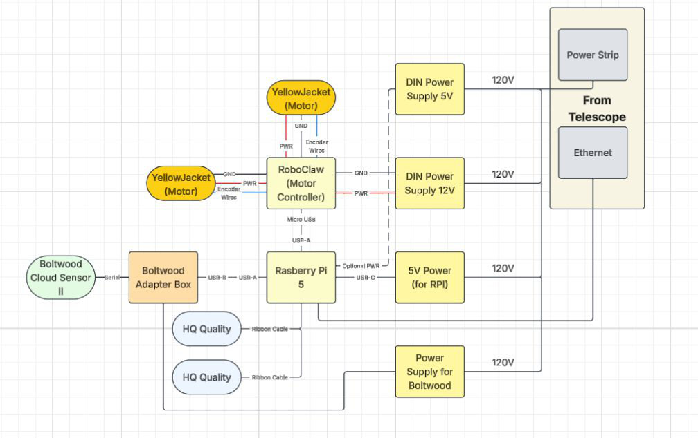
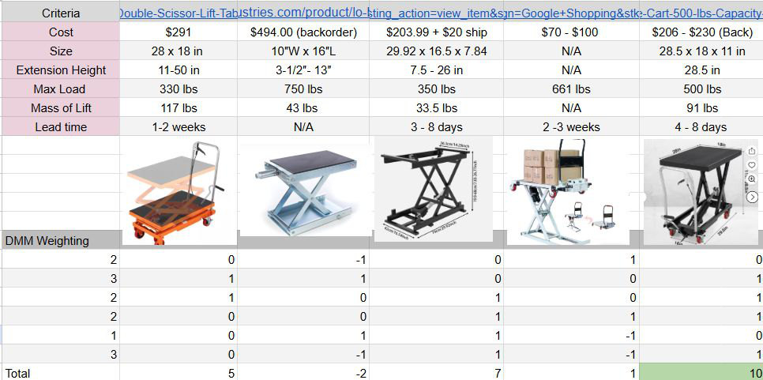
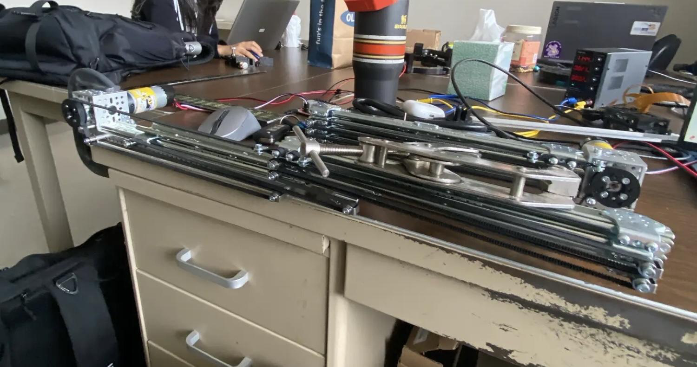
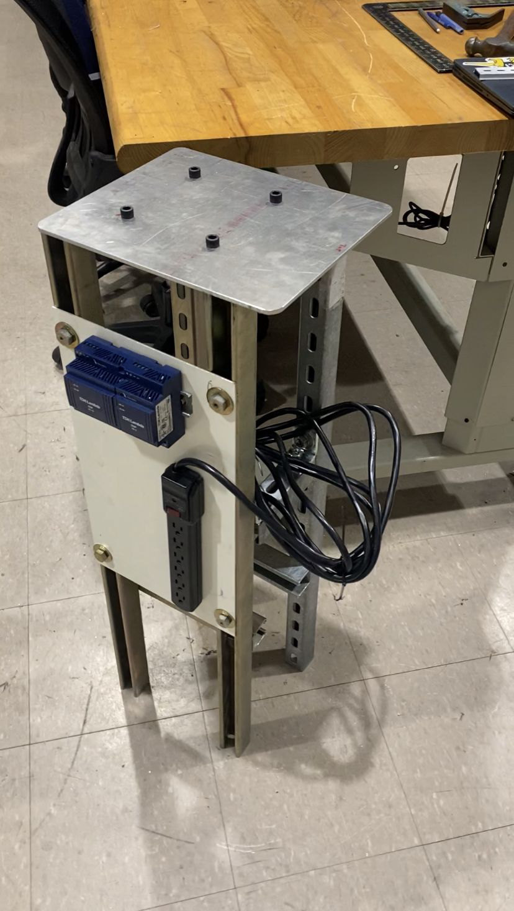
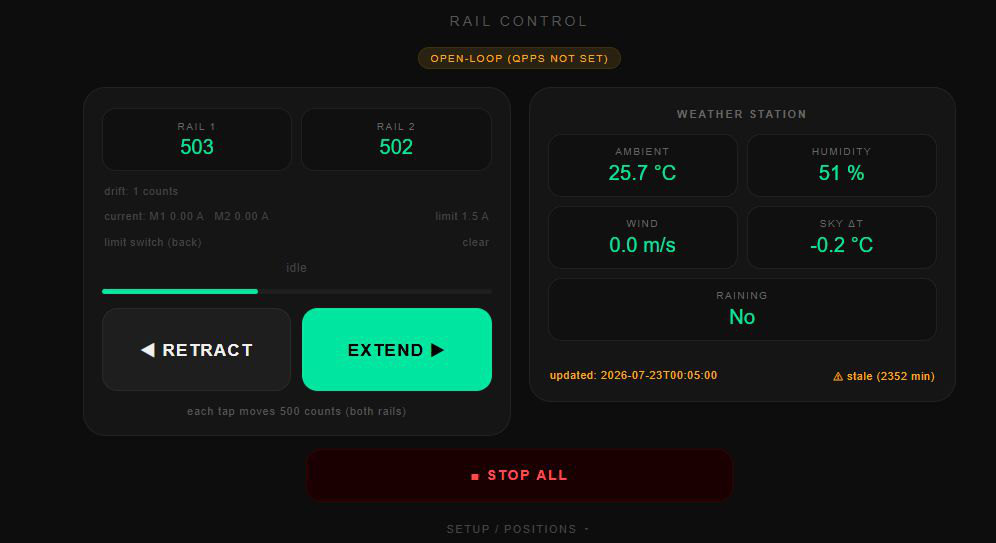

uh88-weather-p1.jpg
01
The Problem
Studied the existing roof sensors and summit conditions that destroyed the last cloud sensor.
Institute for Astronomy · Akamai Program / Summer 2026
During the Akamai Internship at the Institute for Astronomy, I designed a deployable mechanism that extends a Boltwood Cloud Sensor out over the shutter of the UH 88-inch telescope on Maunakea — reading sky conditions in real time, then stowing clear so the dome can safely close.

FIG. 01 — DEPLOYABLE SENSOR SYSTEMMaunakea is one of the harshest observing sites on Earth — 60+ mph winds, freezing rain, and heavy ice buildup. Telescopes rely on roof-mounted weather sensors to decide when to close, but the summit's previous cloud sensor was lost to those conditions, and a fixed sensor can foul the dome as it opens and closes.
My project solves that: a deployable sensor arm that drives a Boltwood Cloud Sensor II — plus an HQ camera — out past the telescope railings to take a clean reading, then retracts fully out of the shutter's path. It runs on two encoded goBILDA Viper linear rails on a rotating base, all carried on a rigid Unistrut frame that clears the existing rails and wiring.
Everything is driven by a Raspberry Pi 5 and a RoboClaw motor controller, with a web dashboard I built to jog the rails and read live weather from any phone or laptop on the network. I designed, machined, wired, and tested the full unit over a 6-week internship, culminating in a Critical Design Review.
Design envelope
How it was made
Scroll — each step drops onto the pile.

Studied the existing roof sensors and summit conditions that destroyed the last cloud sensor.

Ran decision matrices on scissor lifts vs. linear rails; landed on encoded goBILDA rails.

Cut and press-braked sheet aluminum, built the Unistrut frame, and assembled the rails.

Wired the Pi 5, RoboClaw, and DIN supplies; integrated encoders, limit switch, and Boltwood.

Built a web control panel, tuned PID and current limits, and characterized rail deflection.
Fail-safe design
An M5 pin ties the rail housing to the frame — if the shutter strikes it, the pin snaps and the rails swing clear of the opening.
The motor controller caps drive current so a jam can't overload the mechanism or the summit's low-voltage supply.
A homing switch establishes the zero point automatically and bounds travel at the retracted end.
An inline fuse protects the electronics stack against fault currents from the telescope's 120 V feed.
Gallery
Click any tile to view it full-screen.




